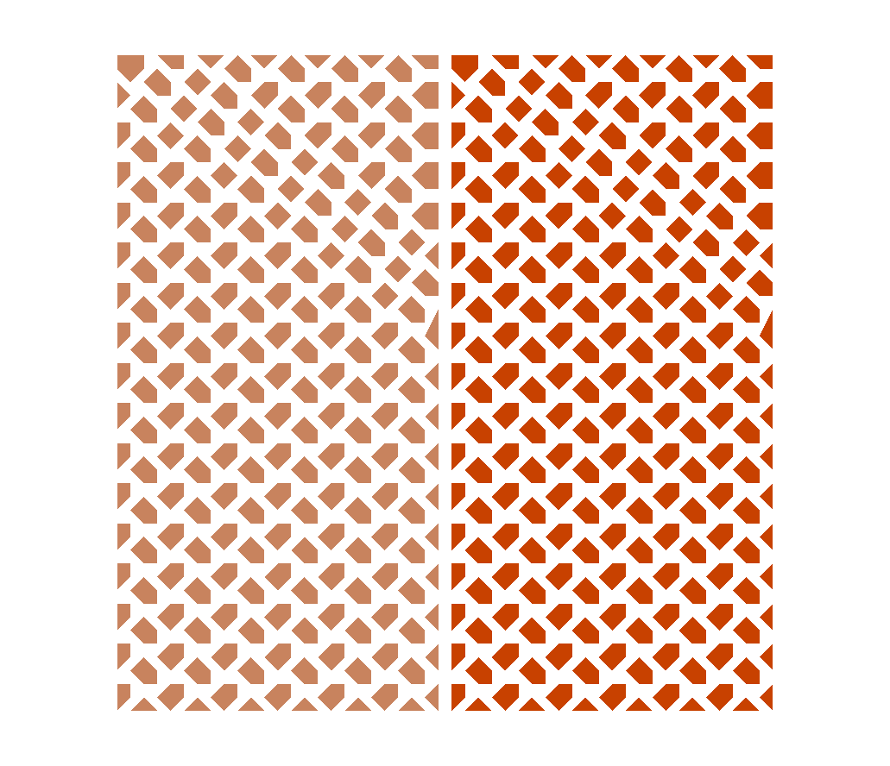
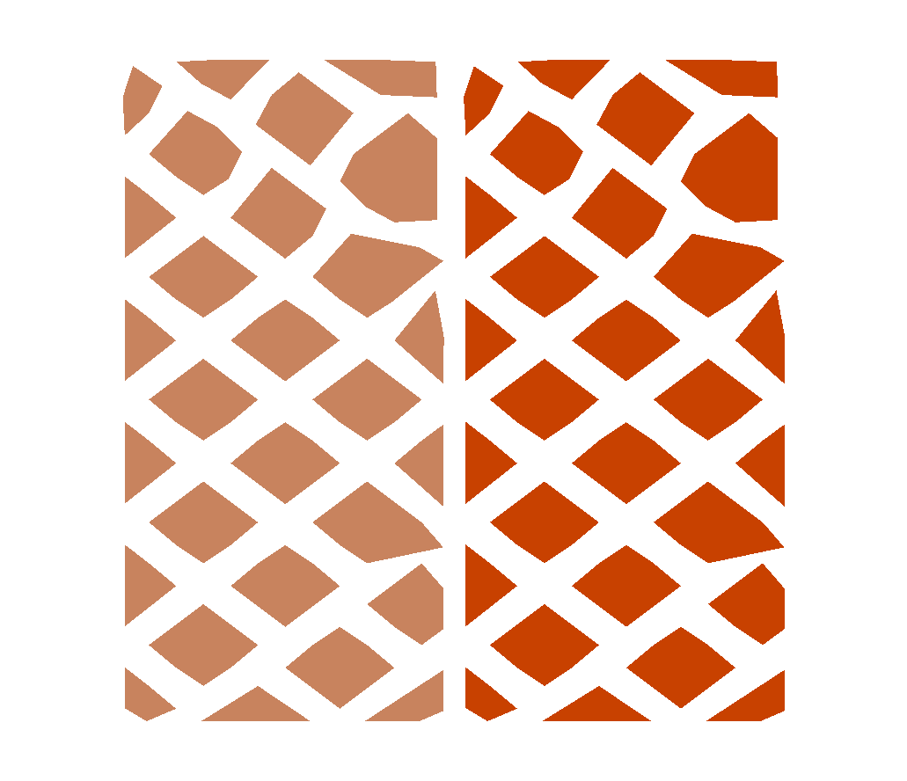
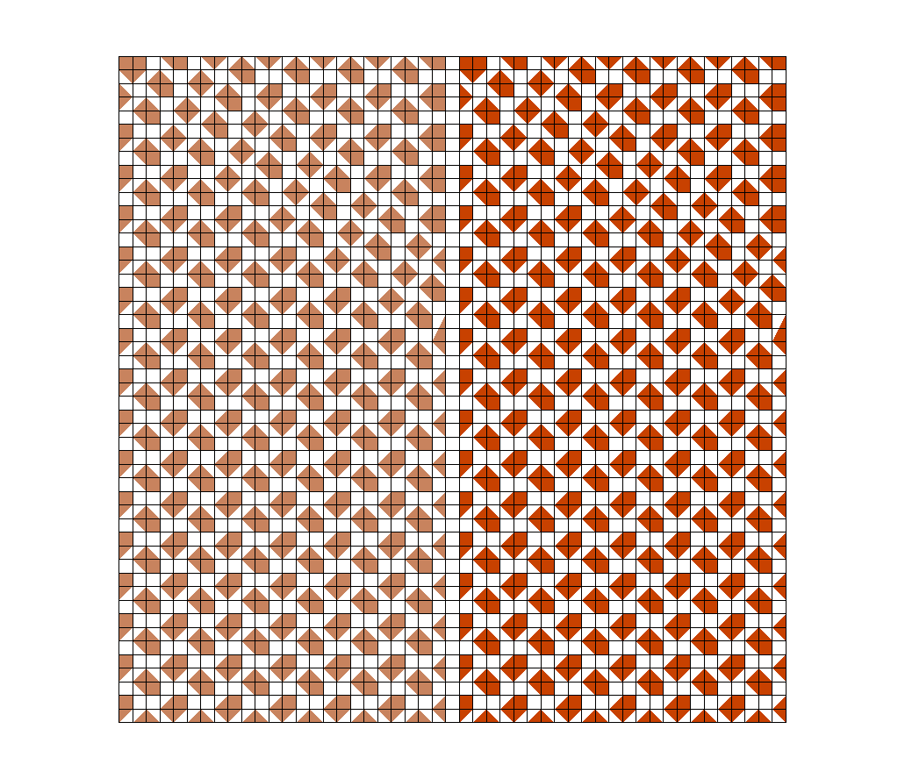
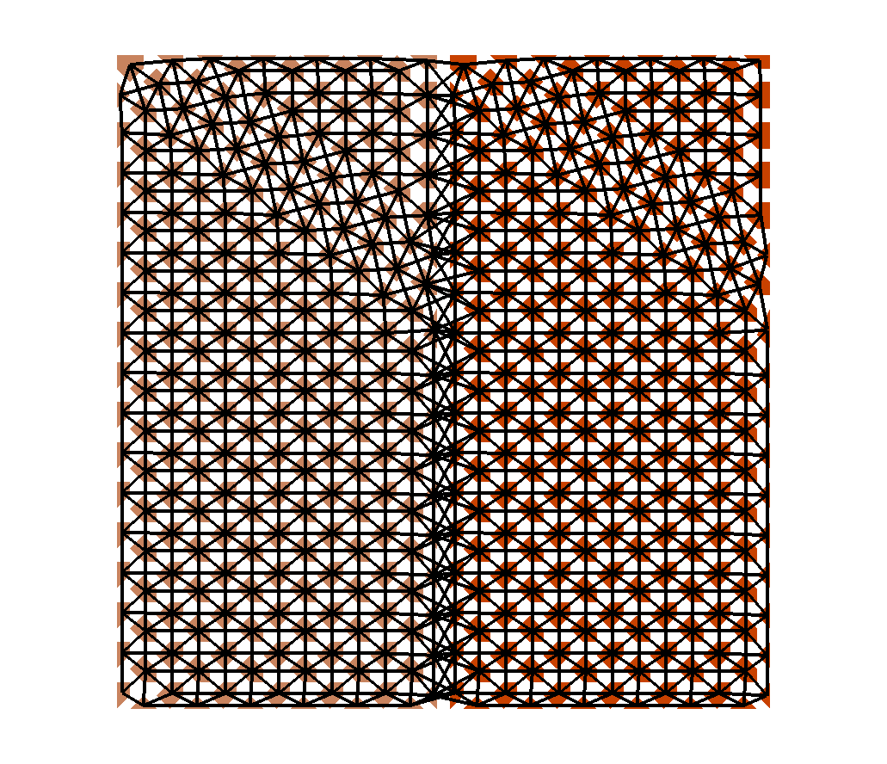
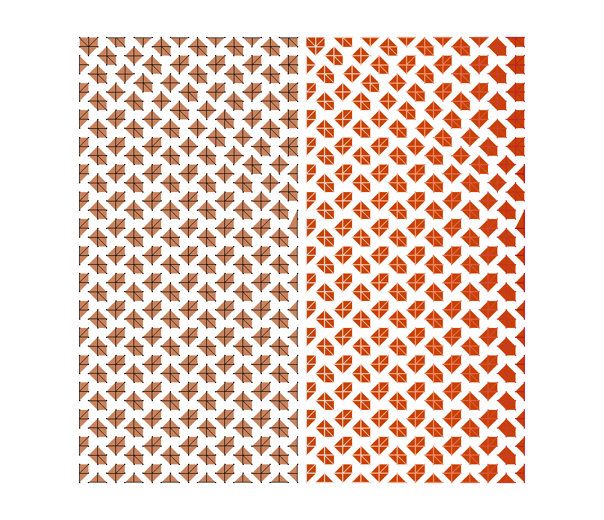

Aggregation
This tutorial provides some background information about the aggregation process in MueLu. A very detailed description of the aggregation algorithms with all internal details can be found in [1].
Building aggregates
Warning
Ref and include missing figures
The aggregates are built using the graph of the fine level matrix \(A\). The graph is generated by the CoalesceDropFactory. Since we still only restrict ourselves to scalar problems with one degree of freedom per node (DofsPerNode=1), the graph of the fine level matrix is trivial to build. Figure aggregation/figure_simpledesignaggregates shows the extended transfer operator design with the additional CoalesceDropFactory.
Insert figure here
Especially for anisotropic or non-symmetric problems, it may be advantageous to drop small entries from the graph of \(A\) and use a filtered graph for generating aggregates.
The following listing shows the definition of the myCoalesceDropFactory which drops all values of the fine level matrix \(A\) with the absolute value smaller than \(0.01\). Of course, the myCoalesceDropFactory has to be registered to generate the variable Graph, which is used by the aggregation factory. The Graph and the variable DofsPerNode generated by the myCoalesceDropFactory are needed as input by the UncoupledAggregationFact. Note that the aggregation routine always works on the node-based information instead of DOF-based information. Therefore, we first have to build the graph of \(A\) which then can be processed by the aggregation algorithm.
<ParameterList name="MueLu">
<!-- Factory collection -->
<ParameterList name="Factories">
<!-- Note that ParameterLists must be defined prior to being used -->
<ParameterList name="myCoalesceDropFact">
<Parameter name="factory" type="string" value="CoalesceDropFactory"/>
<Parameter name="lightweight wrap" type="bool" value="true"/>
<!-- for aggregation dropping -->
<Parameter name="aggregation: drop tol" type="double" value="0.01"/>
</ParameterList>
<ParameterList name="UncoupledAggregationFact">
<Parameter name="factory" type="string" value="UncoupledAggregationFactory"/>
<Parameter name="aggregation: ordering" type="string" value="natural"/>
<Parameter name="aggregation: max selected neighbors" type="int" value="0"/>
<Parameter name="aggregation: min agg size" type="int" value="4"/>
<Parameter name="Graph" type="string" value="myCoalesceDropFact"/>
<Parameter name="DofsPerNode" type="string" value="myCoalesceDropFact"/>
</ParameterList>
<ParameterList name="myTentativePFact">
<Parameter name="factory" type="string" value="TentativePFactory"/>
</ParameterList>
<ParameterList name="myProlongatorFact">
<Parameter name="factory" type="string" value="PgPFactory"/>
<Parameter name="P" type="string" value="myTentativePFact"/>
</ParameterList>
<ParameterList name="myRestrictorFact">
<Parameter name="factory" type="string" value="GenericRFactory"/>
<Parameter name="P" type="string" value="myProlongatorFact"/>
</ParameterList>
<ParameterList name="myRAPFact">
<Parameter name="factory" type="string" value="RAPFactory"/>
<Parameter name="P" type="string" value="myProlongatorFact"/>
<Parameter name="R" type="string" value="myRestrictorFact"/>
</ParameterList>
<!-- ======================= SMOOTHERS ======================= -->
<ParameterList name="SymGaussSeidel">
<Parameter name="factory" type="string" value="TrilinosSmoother"/>
<Parameter name="type" type="string" value="RELAXATION"/>
<ParameterList name="ParameterList">
<Parameter name="relaxation: type" type="string" value="Symmetric Gauss-Seidel"/>
<Parameter name="relaxation: sweeps" type="int" value="1"/>
<Parameter name="relaxation: damping factor" type="double" value="1.0"/>
</ParameterList>
</ParameterList>
</ParameterList>
<!-- Definition of the multigrid preconditioner -->
<ParameterList name="Hierarchy">
<Parameter name="max levels" type="int" value="10"/>
<Parameter name="coarse: max size" type="int" value="10"/>
<Parameter name="verbosity" type="string" value="High"/>
<ParameterList name="All">
<Parameter name="Smoother" type="string" value="SymGaussSeidel"/>
<Parameter name="Graph" type="string" value="myCoalesceDropFact"/>
<Parameter name="Aggregates" type="string" value="UncoupledAggregationFact"/>
<Parameter name="Nullspace" type="string" value="myTentativePFact"/>
<Parameter name="P" type="string" value="myProlongatorFact"/>
<Parameter name="R" type="string" value="myRestrictorFact"/>
<Parameter name="A" type="string" value="myRAPFact"/>
<Parameter name="CoarseSolver" type="string" value="DirectSolver"/>
</ParameterList>
</ParameterList>
</ParameterList>
The listing shows how the Graph and the variable DofsPerNode generated by the coalescing factory myCoalesceDropFact are explicitly used as input for the aggregation routine. This is an example for a direct link of variables from output to the corresponding input. In addition, the myCoalesceDropFact is registered to produce the variable Graph in the Hierarchy section of the XML file. One should also register myCoalesceDropFact to produce the DofsPerNode information. In our case it is not really necessary, since all factories which rely on information from DofsPerNode get the information directly in the XML file (see also myAggExportFact in above listing). So, one has in general two possibilities to declare inter-factory dependencies. One can either explicitly describe the input for each factory (as demonstrated for the Graph in UncoupledAggregationFact) or use the default factories (provided either by MueLu or explicitly set by the user in the Hierarchy section). MueLu uses the following ordering: first, the explicit input dependencies within the factories are used by MueLu. If a user does not define input variables (e.g., there is no input for Aggregates in myTentativePFact), MueLu checks whether there is a default factory for the data variable set in the Hierarchy section (in above listing it will find UncoupledAggregationFact to be responsible to provide the Aggregates). Otherwise MueLu will use some internal default factory.
For demonstration purposes,
we also introduced a RAPFactory which makes use of the user-defined transfer factories myProlongatorFact as well as myRestrictorFact.
The full XML file can be found in ../../../test/tutorial/s4a.xml (see ../../../test/tutorial/s4a.xml).
Visualization of aggregates
For debugging purposes, it can be very useful to visualize the aggregates. MueLu provides several ways to graphically visualize the coarsening process and the aggregates. In order to visualize aggregates one needs the coordinates of the mesh nodes as geometric information. Whereas the user is expected to provide the mesh node coordinates in the Coordinates variable on the finest level, we have to transfer the mesh information to the coarser levels.
General data transfer
The RAPFactory is responsible to generate the coarse level matrix \(A_c\), which is beside the transfer operators \(P\) and \(R\) the only information needed for an algebraic multigrid method to further coarsen the problem. However, in some situations the user might be able to transfer further user-specific information to coarser levels. The RAPFactory can be extended by further helper transfer functions. These helper factories have to be registered in the RAPFactory and then are called during the multigrid setup phase after the Galerkin product has been built. A typical example for such a helper factory is the CoordinatesTransferFactory, which transfers the Coordinates variable to the coarser level and builds coarse node coordinates using the aggregation information. Further examples for special helper transfer factories are the AggregationExportFactory and the CoarseningVisualizationFactory, hich are all introduced in the following sections.
Use the AggregationExportFactory
Insert figure here
If you have an aggregation-based algebraic multigrid method, the AggregationExportFactory is the first choice to export the aggregates for visualization purposes.
The file ../../../test/tutorial/s4av.xml extends the multigrid hierarchy from file ../../../test/tutorial/s4a.xml for support of visualization of aggregates. The important changes are the following:
<ParameterList name="myAggExportFact">
<Parameter name="factory" type="string" value="AggregationExportFactory"/>
<Parameter name="aggregation: output filename" type="string"
value="aggs_level%LEVELID_proc%PROCID.out"/>
<Parameter name="aggregation: output file: agg style" type="string"
value="Convex Hulls"/>
</ParameterList>
<ParameterList name="myCoordTransferFact">
<Parameter name="factory" type="string" value="CoordinatesTransferFactory"/>
</ParameterList>
<ParameterList name="myRAPFact">
<Parameter name="factory" type="string" value="RAPFactory"/>
<Parameter name="P" type="string" value="myProlongatorFact"/>
<Parameter name="R" type="string" value="myRestrictorFact"/>
<ParameterList name="TransferFactories">
<Parameter name="CoordinateTransfer" type="string" value="myCoordTransferFact"/>
<Parameter name="Visualization" type="string" value="myAggExportFact"/>
</ParameterList>
</ParameterList>
Warning
Include the above xml file into testing.
The AggregationExportFactory acts as a small helper factory within the RAPFactory, which writes out some aggregation information to VTK files on the hard disk (see Figure aggregation/figure_simpledesignaggregatesvis). For visualization, the user has to provide the coordinates associated with the mesh nodes in the Coordinates** variable. The coordinates are transferred to the coarse level by the CoordinatesTransferFactory, which is also a helper transfer factory called by the RAPFactory as the AggregationExportFactory. The CoordinatesTransferFactory needs the aggregation information to build a coarse coordinate by using the midpoint of each aggregate. Note, that the RAPFactory accepts a sublist TransferFactories to register all the additional helper transfer factories which are called after the Galerkin product is calculated. The helper transfer factories are called in the ordering in which they are registered in the RAPFactory, but for this example the ordering is not important.
To complete the xml file, one has to declare the CoordinatesTransferFactory to be the default factory for producing coordinates by making the following statements in the Hierarchy sublist of the xml file.
<ParameterList name="Hierarchy">
<Parameter name="max levels" type="int" value="10"/>
<Parameter name="coarse: max size" type="int" value="10"/>
<Parameter name="verbosity" type="string" value="High"/>
<ParameterList name="All">
<Parameter name="Smoother" type="string" value="SymGaussSeidel"/>
<Parameter name="Graph" type="string" value="myCoalesceDropFact"/>
<Parameter name="Aggregates" type="string" value="UncoupledAggregationFact"/>
<Parameter name="Nullspace" type="string" value="myTentativePFact"/>
<Parameter name="P" type="string" value="myProlongatorFact"/>
<Parameter name="R" type="string" value="myRestrictorFact"/>
<Parameter name="A" type="string" value="myRAPFact"/>
<Parameter name="CoarseSolver" type="string" value="DirectSolver"/>
<Parameter name="Coordinates" type="string" value="myCoordTransferFact"/>
</ParameterList>
</ParameterList>
Warning
Include the above xml file into testing.
This way, the myCoordTransferFact is declared as the default factory to generate the coarse coordinates in Coordinates on the coarser levels.
Note
The fine level coordinates have to be provided by the user in the Coordinates variable on the finest level. They are automatically used as input for the CoordinatesTransferFactory to produce the coarse level coordinates for level 1. On the coarser levels then the CoordinatesTransferFactory serves as input factory for being responsible to produce the coarse coordinates vector. Therefore, it is not a problem to declare myCoordTransferFact as generating factory for the Coordinates on all multigrid levels, as per default input data on level 0 provided by the user has always precedence over factory-generated data.
Different aggregation parameters and the corresponding aggregates
 |
 |
 |
 |
 |
Exercise 1
Run the Laplace 2D example on a \(50\times 50\) mesh using the XML file ../../../test/tutorial/s4av.xml. Open paraview and load the aggs_level*_proc.out-master.pvtu file.
Exercise 2
In the ../../../test/tutorial/s4av.xml file, an uncoupled aggregation factory has been explicitly defined using with some user-chosen aggregation parameters. Make a copy of ../../../test/tutorial/s4av.xml and use the default (uncoupled) aggregation routine that is provided by MueLu if no user-specified aggregation algorithm with parameters is prescribed. Which line in the XML file do you have to remove to obtain this behavior? Compare the results (screen output of aggregates, multigrid hierarchy). Try to visualize the aggregates.
In general it is a good idea to use the Hierarchy section to register the factories to generate the variables. It is very hard to declare all dependencies in the factory sections itself. In the worst case you declare, e.g., a UncoupledAggregationFactory and use it as input for the TentativePFactory, but forget to declare it also explicitly as input for the aggregation export factory AggregationExportFactory. If the UncoupledAggregationFactory is not declared as default for Aggregates in the AggregationExportFactory, the AggregationExportFactory will use default aggregates provided by MueLu which are not identical to the aggregates usedfor building the transfer operators! Missing or wrong dependencies in the factory list are very hard to debug. Therefore one should always start with the Hierarchy section and only locally overwrite the dependencies where necessary.